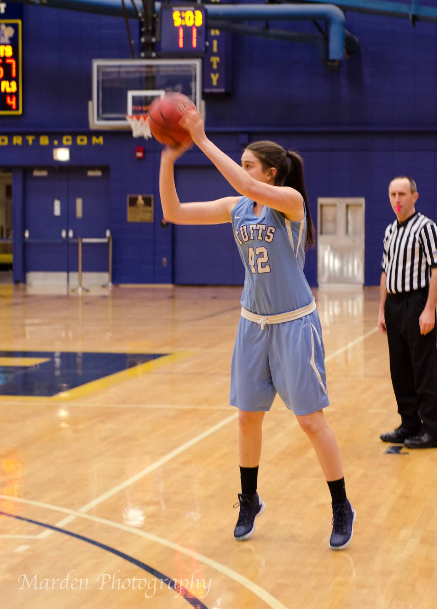

Lindsay Bloom
Tufts University '19 Computer Science
Bachelor of Science
Lover of food, sports, and everything tech.
About Me
I was born and raised in Toronto, Canda where I developed and indulged my passion for sports (including hockey, of course) and technology. Today, you are likely to find me at the gym or Halligan Hall (Tufts Computer Science building). I was a member of the Tufts Varsity Women's Basketball Team in 2016 and competed in a NCAA National Championship Game. When I'm not at the gym or Halligan, I could be exploring the Boston food scene and running Spoon University Tufts or listening to my favorite podcasts.
As a sophomore at Tufts University, I am an aspiring Software Engineer with an interest in front end and full stack. I love to learn about new technologies and am always willing to take on a new project. I'm looking to gain experience in the tech world and learn soak up as much knowledge as possible!
